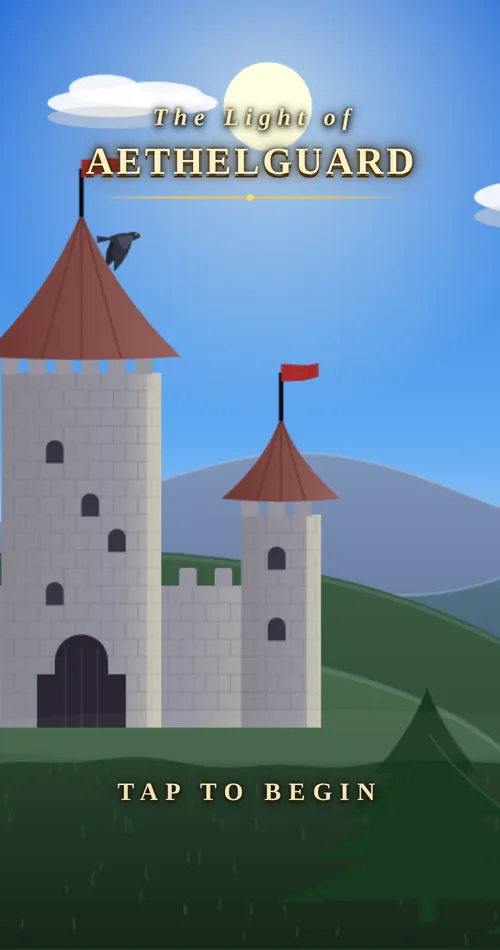
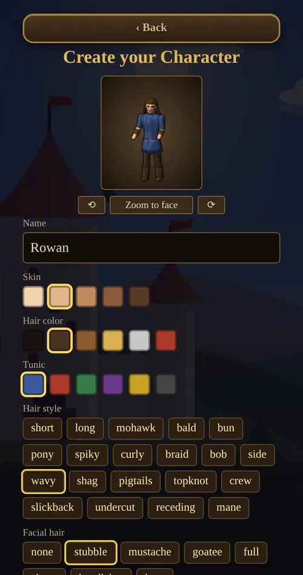
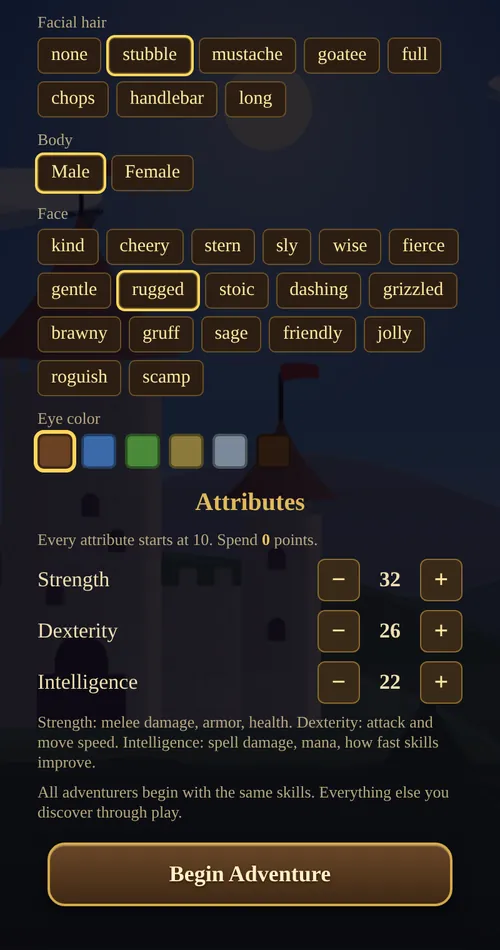
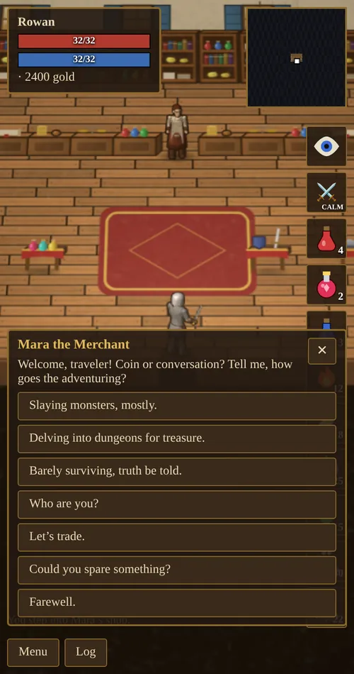
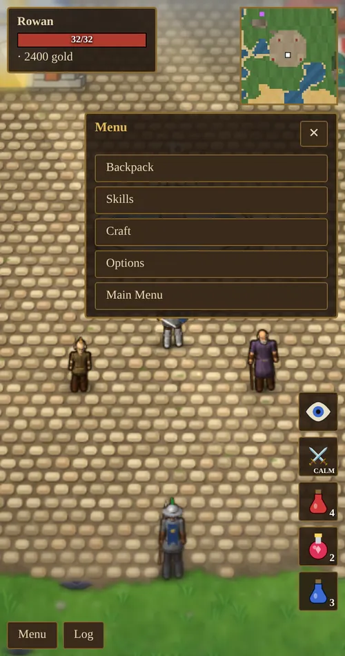

Chapter 1 of 10
Getting Started
Everything from the title screen to your first steps outside the walls.
The title screen and saves
Tap Tap to begin on the title screen to see the main menu.
- Continue picks up your most recent hero and shows how long you have played.
- New Game opens the character creator. Each new game gets its own world: the dungeons, mines and forests are laid out differently every time.
- Load Game lists every saved hero.
The game saves automatically as you play. Saves live in the browser on the device you play on, so a hero made on your phone is not on your computer. Clearing the browser’s site data deletes your saves.

Creating a character
The creator shows a live preview of your hero at the top. The game does not have classes, and nothing you choose here locks you out of anything later. Appearance is purely cosmetic.
Appearance
- Name: up to 14 characters. Townsfolk use it, and it appears above your health bar.
- Hair style: 20 styles, from short and bob to braid, mane and topknot.
- Hair color, skin and tunic colors.
- Facial hair: none, stubble, mustache, goatee, full, chops, handlebar or long. Female characters have no facial hair, so these options are greyed out.
- Body: male or female.
- Face: 18 faces, such as kind, cheery, sly, wise, rugged, grizzled, jolly and scamp.
- Eye color: six colors.

Attributes
Strength, Dexterity and Intelligence all start at 10, and you have 50 points to spread between them with the + and − buttons. Spend them all before you tap Begin Adventure. After that, attributes grow only through use (see Attributes).
Some sensible starting spreads:
| Plan | Str | Dex | Int | Why |
|---|---|---|---|---|
| Warrior | 40 | 20 | 10 | More health and harder hits; can wear plate armor early. |
| Balanced | 32 | 26 | 22 | A good first hero who can try everything. |
| Archer | 25 | 35 | 10 | Fast shots and quick feet. |
| Mage | 22 | 13 | 35 | More mana, stronger spells, faster skill gain. Fragile at first. |
Your starting health equals your Strength. A hero with 10 Strength begins with only 10 hit points, which is very dangerous.
Every hero starts with the same skills: Swordsmanship 20, Lumberjacking 15, Parrying 10, Archery 10, Magery 10, Meditation 5, Sneaking 5, Pickpocket 5 and Tactics 5. Tap Begin Adventure when you are happy.

Moving and doing things
Everything is done by tapping. Your hero walks there and does the obvious thing.
| Tap on… | What happens |
|---|---|
| Open ground | Walk there, finding a path around obstacles. |
| A monster | With war mode on, attack it. With war mode off, walk up to it; you only fight once it attacks you. See war mode. |
| A tree | Chop it for logs (Lumberjacking). |
| An ore vein | Mine it, if you own a pickaxe. |
| A person | Talk to them. |
| A door | Go inside. Tap the doorway again to leave. |
| A dungeon entrance | Go down into the dungeon. |
| A body or a chest | Open it and take the loot. |
| A bird or bat in the sky | Shoot it with a bow or Lightning. |
On a computer you can also use the arrow keys or WASD to walk. Pinch on a phone, or use the mouse wheel, to zoom in and out.
Talking to people
Tap anyone in town to talk. Every conversation offers a few ways to answer, a “Who are you?” question that tells you their story, the services they offer (trading, healing, repairs or training), and a chance to ask for a handout. What people say depends on your reputation.

The screen
- Top left: your name, reputation title, health bar, mana bar (once you know a spell), your current attribute boosts and your gold. Tap your name to open the character sheet.
- Top right: the minimap. Purple marks are dungeon entrances and gold marks are world bosses. Tap it to see the whole map.
- Right side: action buttons. The eye toggles sneaking, the crossed swords toggle war mode (labelled CALM or WAR), and your potions and spells sit below them.
- Bottom left: the message log, which shows the last few events. The Log button opens the last 200 messages.
- Menu: Backpack, Skills, Craft, Spell Book (once you know a spell), Options, and Main Menu to save and return to the title screen.

The menu
- Backpack: equip and remove gear, drink potions, read spell scrolls, and lock items so they cannot be sold by accident.
- Skills: every skill you have discovered and its value.
- Craft: carpentry (bows and arrows) and jewelcrafting. Enchanting opens at the mage tent’s table and smithing at Garrick’s forge.
- Spell Book: cast spells and choose which spells have buttons on screen.
- Options: music and sound volume.
- Main Menu: saves and returns to the title screen.

First steps
- Look around town. The temple (top left of the square) heals you. Mara’s shop (top right) buys loot and sells gear. Garrick’s forge (bottom left) repairs and upgrades gear. The Training Hall (bottom right) has teachers. The storage chest beside the fountain keeps items safe.
- Upgrade your dagger. A dagger adds only +1 damage. A longsword adds +3 and costs 150 gold.
- Hunt near the walls. Monsters get tougher the further you go from town. Rats and orcs live close by. Skeletons, ghouls and wraiths roam further out.
- Sell everything. Mara’s Sell all loot button sells your materials in one tap. Lock the items you want to keep first.
- Carry potions. A healing potion restores 30 health and costs 35 gold.